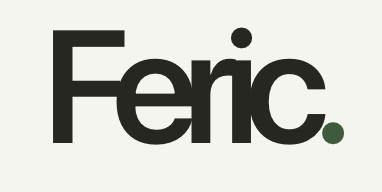

Windows
Intel / AMD 64-bit

FOR CLASSROOMS THAT CODE
Feric brings a focused programming workspace and classroom tools together, so teachers can spend more time teaching and students can spend more time building.
Latest release 1.0.8 · Windows, macOS and Linux
START BUILDING
Choose the version that matches your computer. The Windows x64, macOS and Linux apps include a Java runtime. Windows ARM64 requires Java 25.
Intel / AMD 64-bit
ARM-based PCs · Java 25 required
Apple silicon · M series
Intel-based Macs
Intel / AMD 64-bit
ARM-based Linux devices
Looking for add-ons? Feric extensions and the developer guide are available in the release files.
SIMPLE CLASSROOM PRICING
Give your students a shared space to learn and build. Classroom pricing covers up to 50 students per class.
PER CLASS
₹300
for up to 50 students
✓ One classroom · 50 student seats
✓ Contact us to purchase
Ask about a classNo online checkout. We’ll help you get set up.